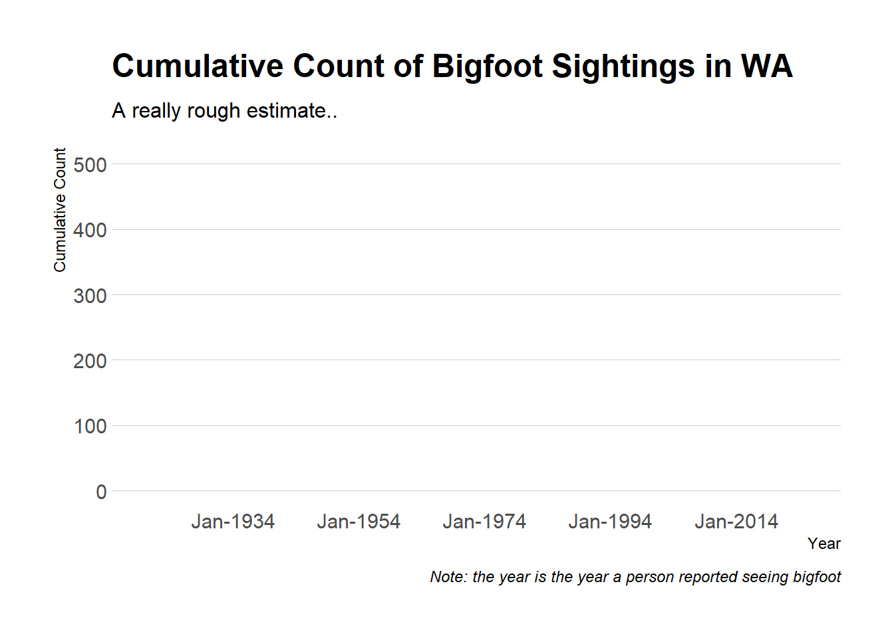
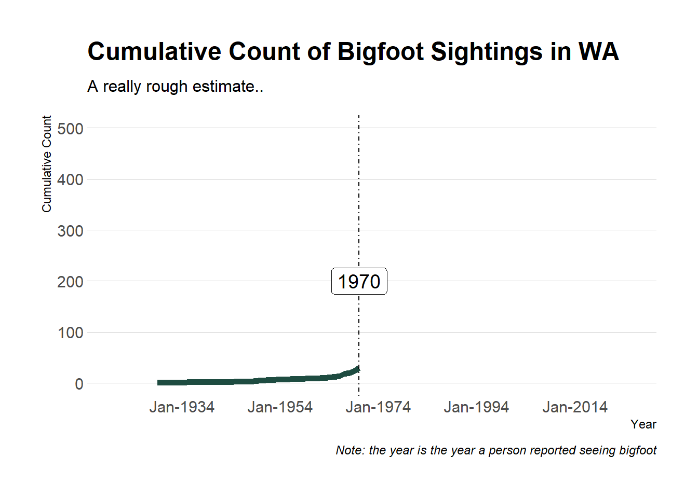
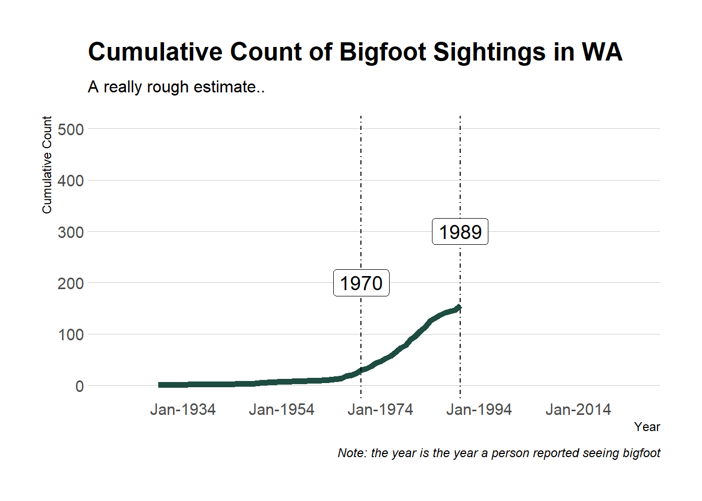
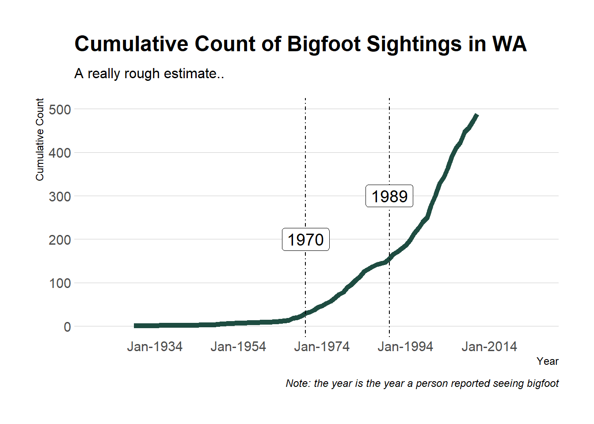

“Few creatures have more speculation and anecdotal evidence surrounding them than Sasquatch does…
Before the 19th century, when stories about the mysterious “ape man” began circulating in the American West, most Native American tribes had their own legends surrounding the enigmatic creature. Sasquatch, most commonly spotted in the Pacific Northwest, is usually described as a bipedal ape-like creature, significantly larger than the average man, and completely covered in dark brown or reddish hair.
Although the scientific community remains skeptical and little evidence exists in support of a modern day Bigfoot, there are a lot of people out there who are confident that some sort of ape-man roams through the depths of North America’s most remote forests and devote their lives to finding them.”
let’s take a look at bigfoot reports in Washington over time.
There weren’t too many sightings, but things start to change around 1970
The 80s saw a lot of sightings
And from there, bigfoot sightings really took off
Where are people seeing bigfoot? We have some spatial data to help us explore that question that we combined with our timeline. Scroll down to see different time points




This interactive globe visualization starts at an angle of 0 - the International Date Line.
It ends at an angle of 0: the prime median.
It ends at an angle of 0: the prime median.
It ends at an angle of 0: the prime median.
It ends at an angle of 0: the prime median.
It ends at an angle of 0: the prime median.
L = {const L =awaitrequire("leaflet/dist/leaflet.js");if (!L._style) {const href =await require.resolve("leaflet/dist/leaflet.css");document.head.appendChild(L._style=html`<link href=${href} rel=stylesheet>`); }return L;};bf_points =FileAttachment("data/bigfoot_points.geojson").json();
fp = bf_points.features.filter(feature => {const year =parseInt(feature.properties.year);// Convert year to integerreturn year <= bf2;// Only keep points with year less than or equal to bf1});// Add markers for each filtered pointfp.forEach(feature => {const lat = feature.geometry.coordinates[1];// Latitude from GeoJSONconst lon = feature.geometry.coordinates[0];// Longitude from GeoJSON L.marker([lat, lon], { icon: BigFootIcon }).bindPopup(` <p><strong>${feature.properties.summary}</strong></p> <p><strong>Report Date: </strong>${newDate(feature.properties.report_date).toLocaleDateString()}</p> <p><strong>Classification: </strong>${feature.properties.classification}</p> <p><strong>Environment: </strong>${feature.properties.environment}</p> <a href="${feature.properties.url}" target="_blank">Read full report</a> `).addTo(map);});
The cities above wrap the entire globe, so to view them all we’ll need to be give the user the ability to spin the globe. We’ll map the progress of the user’s scroll, stored in a variable called crProgressBlock, to a variable called angle. The scale.Linear function handles the linear mapping of crProgressBlock going from 0 to 1 to angle going from -180 to 0.
The cities above wrap the entire globe, so to view them all we’ll need to be give the user the ability to spin the globe. We’ll map the progress of the user’s scroll, stored in a variable called crProgressBlock, to a variable called angle. The scale.Linear function handles the linear mapping of crProgressBlock going from 0 to 1 to angle going from -180 to 0.
The cities above wrap the entire globe, so to view them all we’ll need to be give the user the ability to spin the globe. We’ll map the progress of the user’s scroll, stored in a variable called crProgressBlock, to a variable called angle. The scale.Linear function handles the linear mapping of crProgressBlock going from 0 to 1 to angle going from -180 to 0.
The cities above wrap the entire globe, so to view them all we’ll need to be give the user the ability to spin the globe. We’ll map the progress of the user’s scroll, stored in a variable called crProgressBlock, to a variable called angle. The scale.Linear function handles the linear mapping of crProgressBlock going from 0 to 1 to angle going from -180 to 0.
The cities above wrap the entire globe, so to view them all we’ll need to be give the user the ability to spin the globe. We’ll map the progress of the user’s scroll, stored in a variable called crProgressBlock, to a variable called angle. The scale.Linear function handles the linear mapping of crProgressBlock going from 0 to 1 to angle going from -180 to 0.